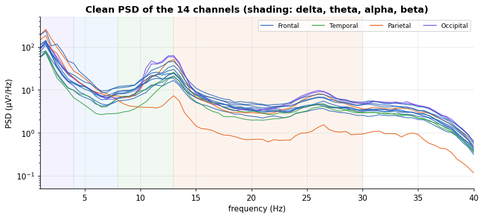
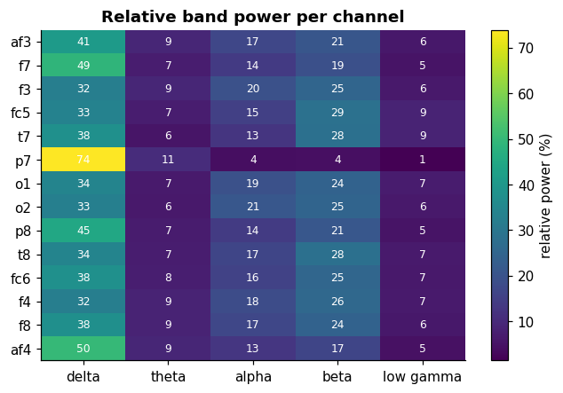
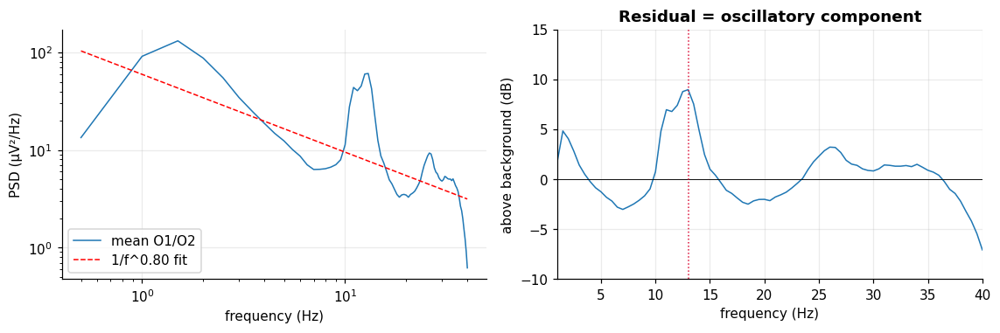
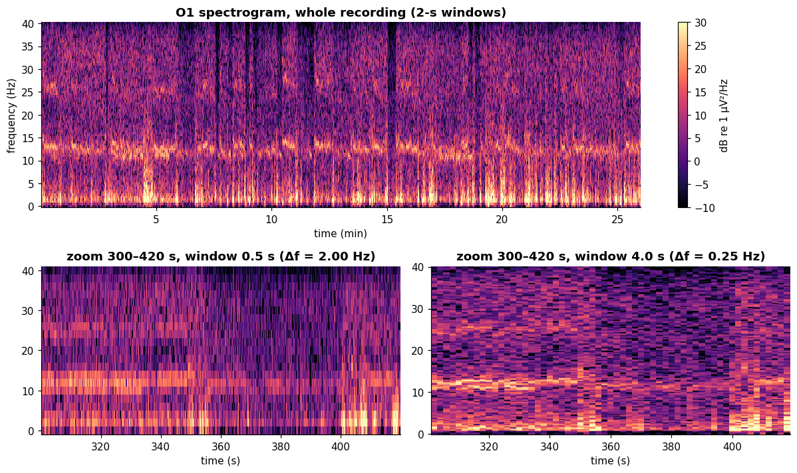
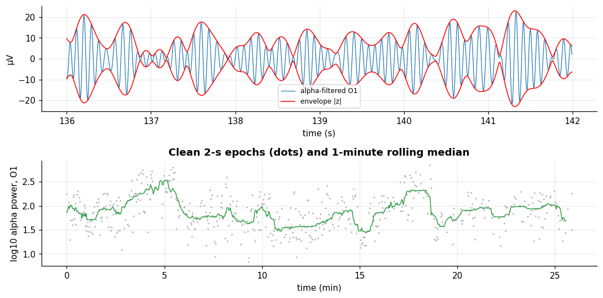
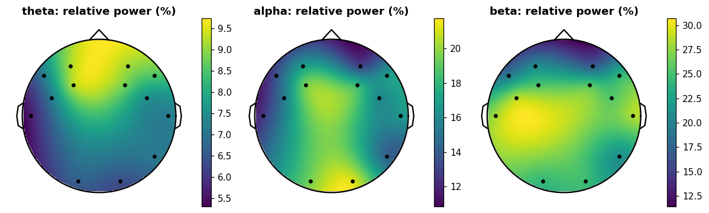

Rhythms, band power and spectrograms#
Learning objectives
- Estimate a clean PSD per channel by averaging over artifact-free epochs.
- Compute absolute and relative band power by numerical integration of the PSD.
- Separate the aperiodic \(1/f\) background from an oscillatory peak by linear regression in log–log space.
- Read a spectrogram and the time–frequency trade-off; extract an alpha envelope with the Hilbert transform.
- Draw a schematic scalp map of a feature.
We now combine the tools of the previous chapters: the filtered signal Xf (1–40 Hz), 2-second epochs, an amplitude rejection rule and the Welch idea of averaging periodograms.
A clean PSD for every channel#
We cut the filtered data into 2-second epochs (256 samples, frequency resolution 0.5 Hz), reject the epochs whose peak-to-peak amplitude exceeds 200 µV on that channel, compute a Hann-windowed periodogram of each remaining epoch and average them. This is Welch's method with hand-picked segments.
NS_ = 2 * FS # 256 samples per epoch
n2 = Xf.shape[1] // NS_
E2 = Xf[:, :n2 * NS_].reshape(len(CH), n2, NS_) # (channel, epoch, sample)
ptp2 = E2.max(axis=2) - E2.min(axis=2)
good2 = ptp2 < 200 # per-channel mask (True = keep)
PSD = []
for k in range(len(CH)):
f_psd, Pk = signal.periodogram(E2[k, good2[k]], fs=FS, window="hann", axis=-1)
PSD.append(Pk.mean(axis=0)) # average over clean epochs
PSD = np.array(PSD) # (14, n_freq), µV²/Hz
print("epochs kept per channel (of", n2, "):", dict(zip(CH, good2.sum(axis=1))))
fig, ax = plt.subplots(figsize=(10, 4))
for k, ch in enumerate(CH):
ax.semilogy(f_psd, PSD[k], color=COLORS[REGION[ch]], lw=1, alpha=.85)
for reg, col in COLORS.items(): ax.plot([], [], color=col, label=reg)
for lo, hi, col in ((1, 4, "#7048e8"), (4, 8, "#2f80ed"), (8, 13, "#2f9e44"), (13, 30, "#e8590c")):
ax.axvspan(lo, hi, color=col, alpha=.07)
ax.set_xlim(1, 40); ax.set_ylim(.05, 500); ax.set_xlabel("frequency (Hz)"); ax.set_ylabel("PSD (µV²/Hz)"); ax.legend(ncol=4, fontsize=8)
ax.set_title("Clean PSD of the 14 channels (shading: delta, theta, alpha, beta)"); plt.show()
epochs kept per channel (of 780 ): {'af3': np.int64(708), 'f7': np.int64(710), 'f3': np.int64(732), 'fc5': np.int64(734), 't7': np.int64(706), 'p7': np.int64(476), 'o1': np.int64(557), 'o2': np.int64(575), 'p8': np.int64(513), 't8': np.int64(700), 'fc6': np.int64(683), 'f4': np.int64(686), 'f8': np.int64(733), 'af4': np.int64(660)}
All channels share the same shape: a steep decrease with frequency, interrupted by a bump around 10–14 Hz, clearest on the occipital channels (purple). The lowest curve (orange) is P7, whose PSD is anomalously low in these clean epochs: a reminder that its contact is poor. A weaker bump near 26 Hz, twice the frequency of the main one, is also visible; such harmonics are common for non-sinusoidal rhythms.
Band power#
Definition: Band power
The power in the band \([f_1,f_2)\) is the integral of the PSD: \(P_{[f_1,f_2)}=\int_{f_1}^{f_2} S(f)\,df\approx \sum_k S(f_k)\,\Delta f\) (or with the trapezoid rule), in \(\mu\mathrm V^2\). The relative band power divides it by the total power of the analysed range, which removes the overall gain and is more comparable between channels and sessions. Because of the 1 Hz high-pass, the delta band starts at 1 Hz here and the total is taken over 1–40 Hz.
BANDS = {"delta": (1, 4), "theta": (4, 8), "alpha": (8, 13), "beta": (13, 30), "low gamma": (30, 40)}
def bandpower(P, f, lo, hi):
"""Integrate PSD `P` (last axis) over [lo, hi) Hz with the trapezoid rule."""
m = (f >= lo) & (f < hi)
return np.trapezoid(P[..., m], f[m], axis=-1)
total = bandpower(PSD, f_psd, 1, 40)
rel = pd.DataFrame({b: bandpower(PSD, f_psd, lo, hi) / total for b, (lo, hi) in BANDS.items()}, index=CH)
fig, ax = plt.subplots(figsize=(7, 4.4))
im = ax.imshow(rel.values * 100, cmap="viridis", aspect="auto"); ax.grid(False)
ax.set_xticks(range(5)); ax.set_xticklabels(rel.columns); ax.set_yticks(range(14)); ax.set_yticklabels(CH)
for (r_, c_), v in np.ndenumerate(rel.values * 100): ax.text(c_, r_, f"{v:.0f}", ha="center", va="center", color="w", fontsize=8)
plt.colorbar(im, label="relative power (%)"); ax.set_title("Relative band power per channel"); plt.show()
(rel * 100).round(1)
| delta | theta | alpha | beta | low gamma | |
|---|---|---|---|---|---|
| af3 | 40.8 | 9.2 | 16.8 | 20.7 | 6.1 |
| f7 | 48.8 | 7.2 | 13.6 | 19.2 | 5.4 |
| f3 | 32.4 | 9.3 | 19.5 | 25.2 | 6.3 |
| fc5 | 33.5 | 7.2 | 15.3 | 28.6 | 8.7 |
| t7 | 37.8 | 5.7 | 12.7 | 28.1 | 8.6 |
| p7 | 73.9 | 10.8 | 4.1 | 4.5 | 1.5 |
| o1 | 34.2 | 6.7 | 19.5 | 24.4 | 6.9 |
| o2 | 32.6 | 6.4 | 21.2 | 24.7 | 6.5 |
| p8 | 44.8 | 7.1 | 14.2 | 21 | 5.2 |
| t8 | 34.1 | 7.2 | 16.6 | 28.3 | 6.6 |
| fc6 | 37.8 | 7.5 | 15.8 | 25.3 | 6.5 |
| f4 | 32.4 | 8.8 | 18.4 | 25.8 | 6.7 |
| f8 | 37.5 | 8.5 | 16.9 | 24.2 | 6.2 |
| af4 | 49.9 | 9.1 | 12.9 | 16.7 | 4.6 |

Delta carries the largest share (41% on average), the usual consequence of the \(1/f\) law, and it is extreme at P7 (74%, with only 4% alpha): another sign of a poorly coupled sensor. Alpha gets 16% on average and is highest at O2 and O1 (20%), but F3 reaches the same level, so the posterior dominance is only modest in this recording. Beta is largest at the temporal and fronto-central sites (T7, T8, FC5: about 28%), where muscle activity from the jaw and temples is the likely contributor. Because the shares sum to 100%, a rise in one band necessarily lowers others, a classic pitfall of compositional data: always check absolute power too.
Oscillation versus background: fitting 1/f#
An EEG spectrum is the sum of an aperiodic background, \(S(f)\propto 1/f^{\chi}\), and genuine oscillatory peaks. In log–log coordinates the background is a straight line: \(\log_{10}S=a-\chi\log_{10}f\). We fit it by least squares on frequencies outside the bump (2–7 Hz and 16–30 Hz, staying away from the 40 Hz edge of our own filter) for the mean of O1 and O2, then look at what remains.
S = PSD[[CH.index("o1"), CH.index("o2")]].mean(axis=0)
fit_mask = ((f_psd >= 2) & (f_psd < 7)) | ((f_psd >= 16) & (f_psd < 30)) # avoid the 40 Hz filter edge
lr = stats.linregress(np.log10(f_psd[fit_mask]), np.log10(S[fit_mask]))
bg = 10 ** (lr.intercept + lr.slope * np.log10(f_psd[1:]))
resid_db = 10 * np.log10(S[1:] / bg)
pk = (f_psd[1:] >= 7) & (f_psd[1:] <= 16)
f_peak = f_psd[1:][pk][np.argmax(resid_db[pk])]
print(f"aperiodic exponent chi = {-lr.slope:.2f}, R² of the fit = {lr.rvalue ** 2:.3f}")
print(f"oscillatory peak at {f_peak:.1f} Hz, {resid_db[pk].max():.1f} dB above the background")
fig, ax = plt.subplots(1, 2, figsize=(10.5, 3.6))
fm = f_psd[1:] <= 40
ax[0].loglog(f_psd[1:][fm], S[1:][fm], label="mean O1/O2"); ax[0].loglog(f_psd[1:][fm], bg[fm], "r--", label=f"1/f^{-lr.slope:.2f} fit")
ax[0].set_xlabel("frequency (Hz)"); ax[0].set_ylabel("PSD (µV²/Hz)"); ax[0].legend()
ax[1].plot(f_psd[1:][fm], resid_db[fm]); ax[1].axhline(0, color="k", lw=.6); ax[1].axvline(f_peak, color="crimson", ls=":")
ax[1].set_xlim(1, 40); ax[1].set_ylim(-10, 15); ax[1].set_xlabel("frequency (Hz)"); ax[1].set_ylabel("above background (dB)"); ax[1].set_title("Residual = oscillatory component")
plt.tight_layout(); plt.show()
aperiodic exponent chi = 0.80, R² of the fit = 0.669 oscillatory peak at 13.0 Hz, 9.0 dB above the background

The background is only roughly a power law, with a shallow exponent \(\chi\approx\)0.8 (\(R^2=0.67\); typical scalp EEG values are closer to 1 to 2, and a consumer device's hardware filters flatten the slope), and the residual reveals a clear peak at 13.0 Hz, about 9 dB above the background. This is at the upper edge of the classical alpha band (8–13 Hz), toward the beta/alpha border, a case where fixed band limits can mislead: individual peak frequencies vary from person to person and with state, and an individualised band centred on the peak is often better. (Whether this peak is a true alpha rhythm cannot be confirmed without knowing the condition, e.g. eyes open or closed, which this file does not label.)
Spectrogram: how the spectrum changes with time#
The short-time Fourier transform computes spectra in a sliding window. Window length controls a fundamental trade-off: long windows resolve frequencies finely but blur time, short windows do the opposite (\(\Delta f\cdot\Delta t\approx 1\)).
i = CH.index("o1")
def spec(x, nperseg):
f, tt, Sxx = signal.spectrogram(x, fs=FS, nperseg=nperseg, noverlap=nperseg // 2, window="hann")
return f, tt, 10 * np.log10(Sxx + 1e-12)
fig = plt.figure(figsize=(11, 6.6)); gs = fig.add_gridspec(2, 2, height_ratios=[1.1, 1])
f, tt, Sdb = spec(Xf[i], 256)
a0 = fig.add_subplot(gs[0, :]); m = f <= 40
im = a0.pcolormesh(tt / 60, f[m], Sdb[m], shading="auto", cmap="magma", vmin=-10, vmax=30)
a0.set_ylabel("frequency (Hz)"); a0.set_xlabel("time (min)"); a0.set_title("O1 spectrogram, whole recording (2-s windows)"); a0.grid(False)
plt.colorbar(im, ax=a0, label="dB re 1 µV²/Hz")
for col, nseg in enumerate((64, 512)):
a = fig.add_subplot(gs[1, col]); seg0 = int(300 * FS); seg1 = int(420 * FS)
f, tt, Sdb = spec(Xf[i, seg0:seg1], nseg); m = f <= 40
a.pcolormesh(300 + tt, f[m], Sdb[m], shading="auto", cmap="magma", vmin=-10, vmax=30)
a.set_title(f"zoom 300–420 s, window {nseg / FS:.1f} s (Δf = {FS / nseg:.2f} Hz)"); a.set_xlabel("time (s)"); a.grid(False)
plt.tight_layout(); plt.show()

Top: the band near 12–13 Hz appears as a bright horizontal stripe all along the session, a fainter stripe near 26 Hz (the harmonic), and vertical bright stripes (wide-band bursts) at the moments of artifacts: a burst is broadband because it is short and abrupt. Bottom: with a 0.5-second window (left) time is sharp but the frequency axis is blurred; with a 4-second window (right) the stripe is thin but the bursts are smeared in time.
Instantaneous amplitude with the Hilbert transform#
To follow one rhythm sample by sample, we band-pass it (alpha, 8–13 Hz) and compute the analytic signal \(z[n]=x[n]+j\,\mathcal H\{x\}[n]\). Its modulus \(|z[n]|\) is the envelope (instantaneous amplitude) and its angle the instantaneous phase.
alpha_o1 = bandpass(X[CH.index("o1")], 8, 13)
env = np.abs(signal.hilbert(alpha_o1))
s0_, s1_ = int(start * FS), int((start + 6) * FS)
fig, ax = plt.subplots(2, 1, figsize=(10, 5), sharex=False)
tt = np.arange(s0_, s1_) / FS
ax[0].plot(tt, alpha_o1[s0_:s1_], lw=.8, label="alpha-filtered O1"); ax[0].plot(tt, env[s0_:s1_], "r", label="envelope |z|")
ax[0].plot(tt, -env[s0_:s1_], "r"); ax[0].set_ylabel("µV"); ax[0].legend(fontsize=8); ax[0].set_xlabel("time (s)")
# per-epoch alpha power over the session (clean epochs only), smoothed over 30 epochs
ep_pow = np.where(good2[CH.index("o1")], np.log10((E2[CH.index("o1")] ** 2).mean(axis=1) + 1e-9), np.nan)
ep_alpha = bandpower(signal.periodogram(E2[CH.index("o1")], fs=FS, window="hann", axis=-1)[1], f_psd, 8, 13)
ep_alpha = np.where(good2[CH.index("o1")], np.log10(ep_alpha), np.nan)
sm = pd.Series(ep_alpha).rolling(30, min_periods=10, center=True).median()
ax[1].plot(np.arange(n2) * 2 / 60, ep_alpha, ".", ms=2, color="#bbbbbb"); ax[1].plot(np.arange(n2) * 2 / 60, sm, color="#2f9e44")
ax[1].set_xlabel("time (min)"); ax[1].set_ylabel("log10 alpha power, O1"); ax[1].set_title("Clean 2-s epochs (dots) and 1-minute rolling median")
plt.tight_layout(); plt.show()

The red envelope follows the waxing and waning of the alpha waves ("spindle-like" modulation), a typical feature of the alpha rhythm. The bottom panel shows the alpha power of O1 over the session; it fluctuates by a factor of a few, but without event markers we cannot attribute these changes to a task or a state (eyes open/closed, drowsiness) rather than to movement or contact changes. The data call for hypotheses and not for stories: a note to remember for the mini-project.
A schematic scalp map#
With only 14 electrodes a map is a coarse interpolation, but it is a nice way to show spatial structure. We interpolate a value known at each electrode with a smooth radial-basis function on the head layout of Chapter 1.
from scipy.interpolate import RBFInterpolator
def topomap(values, ax, title="", cmap="viridis", vmin=None, vmax=None, chs=None):
"""Smooth interpolation of one value per electrode on the schematic head."""
pts = np.array([POS[ch] for ch in (chs or CH)])
rbf = RBFInterpolator(pts, np.asarray(values, float), kernel="thin_plate_spline", smoothing=1e-2)
g = np.linspace(-1.12, 1.12, 140); gx, gy = np.meshgrid(g, g)
z = rbf(np.c_[gx.ravel(), gy.ravel()]).reshape(gx.shape); z[np.hypot(gx, gy) > 1.12] = np.nan
im = ax.imshow(z, extent=[-1.12, 1.12, -1.12, 1.12], origin="lower", cmap=cmap, vmin=vmin, vmax=vmax)
ax.scatter(pts[:, 0], pts[:, 1], c="k", s=12, zorder=3); draw_head(ax); ax.set_title(title)
return im
USE13 = [ch for ch in CH if ch != "p7"] # P7 left out: its contact is poor
fig, ax = plt.subplots(1, 3, figsize=(11, 3.8))
for a, band in zip(ax, ("theta", "alpha", "beta")):
im = topomap(rel.loc[USE13, band].values * 100, a, f"{band}: relative power (%)", chs=USE13)
plt.colorbar(im, ax=a, fraction=.046)
plt.tight_layout(); plt.show()

P7 is left out of the maps because of its poor contact. Alpha is highest at the back (occipital), beta peaks over the temporal and fronto-central region (likely muscle contribution), and theta is slightly higher at the front, broadly in line with textbook topographies. Treat the map as a visual summary, not as a reconstruction: between electrodes the colours are interpolated guesses.
Self-check: Relative alpha power is 30% in a channel before and 40% after some event. Can you conclude that absolute alpha power increased?
Exercise: Frequency of the peak per channel
For every channel, find the frequency of the largest PSD value between 7 and 16 Hz and plot it with topomap. Is the peak frequency uniform over the scalp?
Show solution
m = (f_psd >= 7) & (f_psd <= 16) fpk = [f_psd[m][np.argmax(PSD[k][m])] for k in range(14)] fig, ax = plt.subplots(figsize=(4, 4)); plt.colorbar(topomap(fpk, ax, "peak frequency (Hz)"), ax=ax); plt.show()